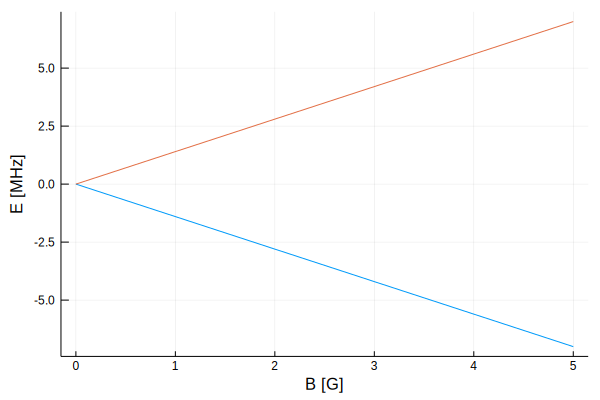
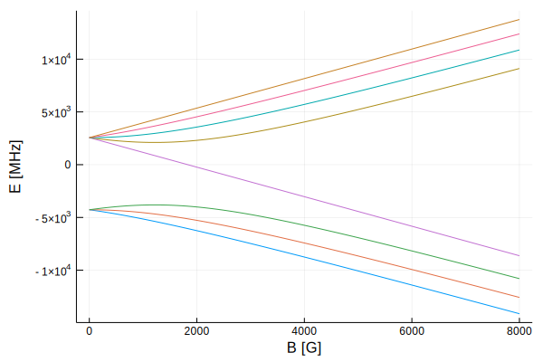
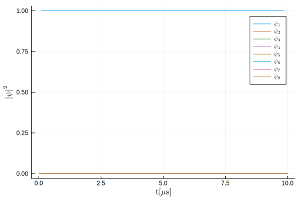
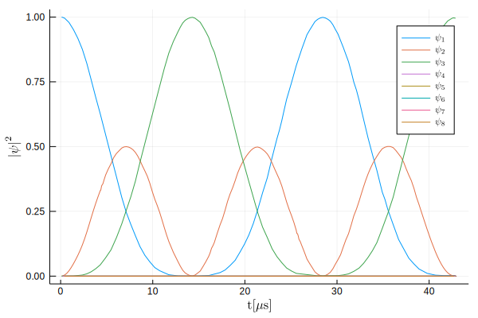

{kind=link}
using Plots
using LinearAlgebra
using DifferentialEquations
using LaTeXStringsIn the zeroth part, I mentioned that we will do some almost professional science stuff. But to draw an owl, you need to start with circles, which is something we’ll do today. I’ll show you what does it actually mean to solve a quantum-mechanical problem and what are the most basic mathematical tools to do it.
To demonstrate the use of these tools, I need some physical example. There are a few choices, the most common one being the particle in square potential well. A system like that is nice because people are intuitively more familiar with problems in real space, but there are some nuances that get swept under the rug in introductory materials and don’t become really obvious in a calculus-based approach. However, computers are generally bad at calculus and really good at algebra, so we’ll rely more on the matrix formulation of quantum mechanics, where the finer details of real-space representation and consequences of having a finite amount of memory would force me to feed you too much information in one sitting. Fortunately, there are other simple examples that work without silent assumptions and demonstrate the basics just as well - systems with finite, small amount of possible states like particle spin and angular momentum.
Touching base(s) with Angular Momentum and Spin
The first problem we’ll attempt to solve is that of energies of electrons in presence of magnetic fields. It’s not necessarily the most general or interesting problem, but the idea of measuring (changes of) energy states of things is very popular in physics. To do that, we should talk a bit about angular momentum in quantum mechanics. We can start with classical mechanics first, where angular momentum is simply defined as
\[ \vec{L} = \vec{r} \times \vec{p}. \]
If we know the momentum and position of an object relative to some reference point, it’s easy to know it’s angular momentum. Just to get classical physics out of the way, I’ll get a little bit ahead of myself and also point out that angular momentum can be shown to be related to magnetic moment \(\vec{m}\) which describes the strength of a magnetic dipole. In classical physics the relationship between these two is
\[ \vec{m} = \gamma \vec{L}, \]
where \(\gamma\) is the gyromagnetic ratio. If you want a hand-wavy explanation for why are these two related, consider how does a magnetic dipole get produced: From a circulating current. So a massive charge that flies around in circles will have angular momentum because…ehm…it has mass and flies around in circles, and it also produces a magnetic dipole because the circling around of charge forms a current loop.
However, we want to deal with quantum mechanics, so we need operators that will act on a wave function (or a state).
What follows is not that hard to derive (it’s usually done in the first quantum mechanics class in undergrad, so you don’t need more than first-year college math) but it’s tedious, especially if you’re allergic to spherical coordinates. To get started here, we need to know only a few algebraic properties of the operators which I will spell out in the next few paragraphs. If this is new to you, your two options are to either take my word for it (not recommended), or do a quick Google search for angular momentum in quantum mechanics (first good hit for me was this) and at least skim through what you find. I’ll wait.
Done? Good. So, the angular momentum operator (in position representation) is
\[ \hat{\mathbf{L}} = -i \hbar (\vec{r} \times \nabla), \]
where \(\nabla\) is the nabla operator. In this case (we represent the wavefunctions in real-space), the momentum operator is \(-i\hbar\nabla\) (position derivative of the wavefunction with some pre-factors) and the position operator is just multiplication by the position, so the operator \(\hat{\mathbf{L}}\) follows relatively closely it’s classical counterpart. But that’s where the similarities end. In classical mechanics, nothing is stopping you from knowing all the components of the angular momentum \(\vec{L} = \left( L_x, L_y, L_z \right)\) but in quantum mechanics, the uncertainty principle poops on our parade.
It can be shown that only commuting properties can be measured at the same time with arbitrarily small uncertainty. If we calculate the commutator \(\left[ \hat{X}, \hat{Y} \right] = \hat{X}\hat{Y} - \hat{Y}\hat{X}\) of the angular momentum component operators, we’ll see that individual components don’t fall into this category:
\[ \left[ \hat{L}_l, \hat{L}_m \right] =i\hbar \sum_n \varepsilon_{lmn}\hat{L}_n, \]
where \(l,m,n = \{x,y,z\}\) and \(\varepsilon_{lmn}\) is the Levi-Civita symbol (proof is left as an excercise to the reader). This means that you cannot measure more than one component at a time (or rather, you can but it will be subject to quantum-mechanical uncertainty). Imagine it as the angular momentum vector rotating along an axis, drawing out a cone surface while doing so. You can determine the cone side length (the magnitude) and the cone angle/height (the projection along that axis). The uncertainty principle forbids you to know where on the cone surface does the angular momentum lie.
The other important ingredient to what follows is the magnitude of angular momentum \(\hat{L}^2 = \hat{L}_x^2 + \hat{L}_y^2 + \hat{L}_z^2\), which fortunately does commute with the components:
\[\left[\hat{L}^2, \hat{L}_x \right] = \left[\hat{L}^2, \hat{L}_y \right] = \left[\hat{L}^2, \hat{L}_z \right] = 0.\]
Proof of this one is obvious if you do the commutation relations for individual components. As one would expect from quantum mechanics, the angular momentum is quantized and has corresponding quantum numbers for magnitude \(l \in \{ 0, \frac{1}{2}, 1, \frac{3}{2}, 2,\ldots \}\) and projection along one axis (conventionally, the z-axis) \(m \in \{ -l, -l+1,\ldots,l-1, l \}\).
Now we can finally get to actual code. First, I’ll import the libraries we’ll use today: Plots, LinearAlgebra, DifferentialEquations and LaTeXStrings. You’ll have to install most of them before use and there are two ways to do that: If you’re in a Julia REPL, you can just press the ] key, which will bring you into the package management mode and just do, for example, add Plots (ctrl-c to exit the mode). If you’re in a Jupyter notebook or run an older version of Julia (I think <0.7), first enter using Pkg and then Pkg.add("Plots") (this method works also in the REPL).
Names of the libraries are self-descriptive, so I won’t waste time on describing what’s in them right now, but there’s something I want to warn you about: Julia is JIT compiled and the first import of big libraries can take some time as the packages are pre-compiling certain parts to save you time during runtime. Don’t panic, if you were to use it in a big-boy piece of software where performance becomes important, the initial loading time amortizes as it’s done only once.
Those of you, who read the zeroth part of this series know that we have to chose a basis to do any numerical calculations. In principle, any complete orthonormal basis would suffice, but we can make the problem much simpler by picking a basis that reduces the amount of work we do. Our current endgame is to solve the Schrödinger equation which amounts to diagonalizing the Hamiltonian that will consist of a bunch of angular momentum (or spin) operators, so it’s convenient to use the joint eigenstates of the \(\hat{L}^2\) and \(\hat{L}_z\) operators \(\{ \left|l,m\right> \}_{m=-l}^l\). For the rest of the discussion, I’ll switch the “name” of the operator from \(L\) to \(S\) for reasons that will become obvious soon, i.e. the states become \(\left|s,m\right>\).
Now, to define an operator means to define what it does to a state. The case of the \(\hat{S}^2\) and \(\hat{S}_z\) operators is easy because we used their eigenstates as the basis:
\[ \hat{S}^2 \left| s, m \right> = s(s+1) \left| s, m \right>, \] \[ \hat{S}_z \left| s, m \right> = m \left| s, m \right>. \]
To define the \(\hat{S_x}\) and \(\hat{S_y}\) operators, we use raising and lowering operators which I’ll call \(S_+\) and \(S_-\), respectively.
\[ \hat{S}_+ \left| s, m \right> = \sqrt{s(s+1) - m(m+1)} \left| s, m+1 \right>, \] \[ \hat{S}_- \left| s, m \right> = \sqrt{s(s+1) - m(m-1)} \left| s, m-1 \right>. \]
These operators are slightly different because they’re not Hermitian (they are not their own complex conjugates). As a consequence, they don’t have real eigenvalues and don’t correspond to physical observables. What they do is change the projection of spin: if we take a state with magnitude s and z-projection m and apply the operator \(\hat{S}_+\), it “tilts” towards the axis and becomes a state with projection m+1. We can then use the equality \(\hat{S}_{\pm} = \hat{S}_x \pm i\hat{S}_y\) to define the last two component operators
\[ \hat{S}_x \left| s, m \right> = \frac{\hat{S}_+ + \hat{S}_-}{2} \left| s, m \right>, \] \[ \hat{S}_y \left| s, m \right> = \frac{\hat{S}_+ - \hat{S}_-}{2i} \left| s, m \right>. \]
function s₊(s)
if mod(s, 1/2) == 0
diagm(1 =>[sqrt(s*(s+1) - m*(m+1)) for m in (s-1):(-1):(-s)])
else
throw(DomainError(s, "spin number must be a integer multiple of 1/2"))
end
end
function s₋(s)
copy(transpose(s₊(s)))
end
function sx(s)
(s₊(s) + s₋(s)) / 2.0
end
function sy(s)
(s₊(s) - s₋(s)) / 2.0im
end
function sz(s)
if mod(s, 1/2) == 0
diagm(0 => (s):(-1):(-s))
else
throw(DomainError(s, "spin number must be a integer multiple of 1/2"))
end
end
function sid(s)
if mod(s, 1/2) == 0
n = Int(round(2*s+1))
Matrix(I, n, n)
else
throw(DomainError(s, "spin number must be a integer multiple of 1/2"))
end
end;The implementation of the code is pretty straight-forward once you properly digest what is written above it. For a given spin (or angular momentum) magnitude s, there is a set of 2s+1 basis vectors with 1 in their corresponding m-component and 0 everywhere else, i.e. \(\left| s, s \right> = (1, 0, 0, ...)\), \(\left| s, s-1 \right> = (0, 1, 0, ...)\), etc. The operators are just matrices that multiply the state vectors, as prescribed by the formulas. This is perhaps best demonstrated by a concrete example of, say, the raising operator for a spin-1 state which acts as \(\hat{S}_+ \left| 1, -1 \right> = \sqrt{2} \left| 1, 0 \right>\), \(\hat{S}_+ \left| 1, 0 \right> = \sqrt{2} \left| 1, 1 \right>\) and \(\hat{S}_+ \left| 1, 1 \right> = 0\):
s₊(1)3×3 Array{Float64,2}:
0.0 1.41421 0.0
0.0 0.0 1.41421
0.0 0.0 0.0 Code-wise, there’s not much to comment on because most of the operator-generating functions use the s₊ function. We first make sure that the input is a valid quantum of angular momentum (which in units of \(\hbar\) is an integer multiple of 1/2) and then use it to generate a off-diagonal matrix using the line diagm(1 =>[sqrt(s*(s+1) - m*(m+1)) for m in (s-1):(-1):(-s)]).
To disassemble this line, let’s first look at [sqrt(s*(s+1) - m*(m+1)) for m in (s-1):(-1):(-s)] which uses list comprehensions that are familiar to anyone who used Python before: an expression [f(x) fox x in start:step:stop] will generate a vector with components f(x) with x going from start to stop by step, e.g.
[abs(x) for x in -5:2:5]6-element Array{Int64,1}:
5
3
1
1
3
5The other function is diagm(n => v) which generates a diagonal matrix with the vector v on then-th diagonal. The last functionsid is the identity function. I put it there in anticipation of what will happen in a moment.
This might a good time to demonstrate how to use the Julia’s documentation feature, where anywhere in the REPL or in a Jupyter notebook, you can just do ?expr to get documentation for the given expr, like this:
?diagmsearch: diagm StochasticDiffEqAlgorithm OrdinaryDiffEqAlgorithm
diagm(kv::Pair{<:Integer,<:AbstractVector}...)Construct a square matrix from Pairs of diagonals and vectors. Vector kv.second will be placed on the kv.first diagonal. diagm constructs a full matrix; if you want storage-efficient versions with fast arithmetic, see Diagonal, Bidiagonal Tridiagonal and SymTridiagonal.
Examples
julia> diagm(1 => [1,2,3])
4×4 Array{Int64,2}:
0 1 0 0
0 0 2 0
0 0 0 3
0 0 0 0
julia> diagm(1 => [1,2,3], -1 => [4,5])
4×4 Array{Int64,2}:
0 1 0 0
4 0 2 0
0 5 0 3
0 0 0 0diagm(v::AbstractVector)Construct a square matrix with elements of the vector as diagonal elements.
Examples
julia> diagm([1,2,3])
3×3 Array{Int64,2}:
1 0 0
0 2 0
0 0 3…Neat.
Some of you might ask why did I just nonchalantly switch from angular momentum to spin? The short answer is “Because I can”. The long answer is because it’s more appropriate for the problems that follow and it doesn’t really matter. Sometimes (as will be the case of our “real-world” example) quantum objects can have zero regular angular momentum but they still have this internal degree of freedom that we call spin. It is related to it, but doesn’t come from any real physical rotation. Part of the “related” is that it transforms and behaves in the same way as regular (quantized) angular momentum and can be represented by using the machinery we already have, which is best demonstrated by showing it explicitly:
sx(1/2)2×2 Array{Float64,2}:
0.0 0.5
0.5 0.0sy(1/2)2×2 Array{Complex{Float64},2}:
0.0-0.0im 0.0-0.5im
-0.0+0.5im 0.0-0.0imsz(1/2)2×2 Array{Float64,2}:
0.5 0.0
0.0 -0.5Many of you will recognize that these are, indeed, the Pauli spin matrices in units of \(\hbar\).
Knowing this, we can finally get to some tangible physics - electrons in (weak) magnetic fields. For now, we’ll be dealing with just the spin degree of freedom which means that we ignore all the other dynamics. You can pretend that the electron is bound to a hydrogen nucleus in an orbital with zero regular angular momentum (for example the ground-state) and we want to see how the energy of it’s orbitals changes when we apply magnetic field.
First things first: units. Fortunately, there are only two of them in this case. Unfortunately, there are some weird unit conventions out there. The easier one is the unit of magnetic field, Gauss. It’s a cgs unit commonly used in experimental physics and the conversion to SI is 1 T = 10000 G. The stranger one is the unit of energy, MHz, which is a consequence of setting the Planck’s constant to 1 (see, for example the relation between energy and frequency of a photon \(E = \hbar \omega\)). This is a rather common thing to do in physics and it means that, if you see energy in MHz, there’s a silent assumption that we’re actually reporting energy divided by the Planck’s constant. To be able to fully write up the Hamiltonian, we need two more constants. The Bohr magneton \(\mu_B\) which is a scale factor of the magnetic moment of a electron with given spin or angular momentum and the electron g-factor \(g_S\) that says how big this magnetic moment is when it comes from the spin of an electron (similar to the gyromagnetic ratio).
It’s smooth sailing from here on. The potential energy of a (classical) magnetic moment \(\vec{m} = (m_x, m_y, m_z)\) in a external magnetic field \(\vec{B} = (B_x, B_y, B_z)\) is:
\[ U = \vec{m}\cdot\vec{B}. \]
We’re ignoring all the other dynamics of the electron, so writing up the Hamiltonian (\(\hat{H} = \hat{T} + \hat{U}\) with \(\hat{T} = \hat{0}\)) is as easy as replacing the classical values with their operators:
\[ \hat{H} = -\mu_B g_S \left( \hat{S_x}B_x + \hat{S_y}B_y + \hat{S_z}B_z \right), \]
or, in the matrix form:
\[ \hat{H} = -\frac{1}{2} \mu_B g_S \left( \begin{matrix} B_z & B_x - i B_y \\ B_x + i B_y & -B_z \end{matrix} \right), \]
Which is coded as
function H_el(b)
μB = 1.3996245; # Bohr magneton in ħ*MHz/G
gS = -2.00231930436; # Electron g-factor
prod = @. b[1] * sx(1/2) + b[2] * sy(1/2) + b[3] * sz(1/2)
@. -μB * gS * prod
end;Through the code, you’ll sometimes see me using me using the macro @. or add dots to some of my functions and operators, e.g. .+ or abs.(M). This is so that the compiler can do loop fusion and (hopefully) allow me to gain some performance for cheap. Be careful when using this feature, especially when working with vectors and matrices, where .* is element-wise multiplication and * is matrix-matrix or matrix-vector multiplication.
Let’s try it! First, let’s look at the eigenstates of our Hamiltonian in zero field, e.g. the states in which we can find our electron after measurement:
eigvecs(H_el([0; 0; 0]))2×2 Array{Complex{Float64},2}:
1.0+0.0im 0.0+0.0im
0.0+0.0im 1.0+0.0imWe see that the two eigenstates (columns of the resulting matrix) are \(\left| \frac{1}{2}, \frac{1}{2}\right> = \left| \uparrow \right> = (1,0)\) and \(\left| \frac{1}{2}, -\frac{1}{2}\right> = \left| \downarrow \right> = (0,1)\) - the spin-up and spin-down state. The energy eigenvalues are
eigvals(H_el([0; 0; 0]))2-element Array{Float64,1}:
0.0
0.0…unsurprising. There’s no field, so both states have same energy of 0 relative to the ground-state energy - the ground state is degenerate, which is something that will be a considerable pain in the ass later on with fancier methods. This is also the reason why atomic orbitals can take at least two electrons (or an even number, if there’s more of them and they have angular momentum) - even if they are fermions and being in the same state is forbidden by the Pauli exclusion principle, they can sit in the same orbital with different spin projections, which makes them two distinct states.
Let’s plot the two state energies as a function of applied magnetic field (in the z-direction):
b_range = 0:5
energies = vcat((eigvals(H_el([0; 0; b]))' for b in b_range)...)
plot(b_range, energies, xlabel="B [G]", ylabel="E [MHz]", leg=false)
The ugly line vcat((eigvals(H_el([0 0 b]))' for b in b_range)...) calculates the eigenvalues for multiple values of field b (in range from 0 to 5 Gauss) and stacks them into a matrix. This is purely so that it can be conveniently plotted using the plot function that plots columns as individual lines.
The energy levels start to separate as the applied field increases in magnitude, analogously to how it works with classical magnetic moments. The spin aligned with the field sits in a ever-deeper a potential well (classically, you would need to do more work to tilt it) and the spin anti-parallel becomes higher in energy (more work is needed to align it in that direction). The energy difference between the two states is proportional to the field and is known as the Zeeman effect, which will be important for the star of today’s show. But before that, we need to get two spins to interact.
Search for more space(s) or: How many bits does it take to store the concept of multiple sine functions?
Unless you’re working on quantum computing, a single two-level state as shown above is quite boring. To give a little bit more structure to our system, we’ll look at something with more degrees of freedom: a single atom of Rubidium-87. Before we get to the specifics, we need to talk a bit about systems with multiple (coupled) degrees of freedom.
What’s a \(\otimes\)?
In the case we have shown before, there was only one degree of freedom of the system - the spin. Correspondingly, the Hamiltonian acted only on this degree of freedom and encompassed all the interesting dynamics. But this will not always be the case. You can easily imagine a situation, where there’s more to the it than just the dynamics of a single state variable: For example, you could have multiple spins sitting on a chain or lattice and interact together. How do we conveniently write down a Hamiltonian for a system like this? Well, the system is a sum of its parts, so it’s not irrational to try to do it like this:
\[\hat{H} = \left( \sum_k \hat{H}^{(k)} \right) + \hat{H}_{int}.\]
The individual degrees of freedom are described by their individual (sub-)Hamiltonians \(\hat{H}^{(k)}\) and, if we continue with the example of the chain of spins in magnetic field, \(\hat{H}^{(k)}\) would be the spin Hamiltonian acting exclusively on the k-th spin. Operators corresponding to interaction between the spins (e.g. exchange interactions) are all hidden in \(\hat{H}_{int}\) which will act on the system as a whole. Formally speaking, the ability to split the Hamiltonian so neatly hinges on the total Hilbert space having a tensor-product structure - in the context of our discussion in the previous part, the state of the whole system can be described by enumerating states of all it’s subsystems. This is not always the case and we’ll be dealing with situations where it all comes crashing to the ground in the future. But it’s going to work out fine this time, so let’s focus on how to implement it.
If the Hilbert space \(H\) can be factorized into subspaces corresponding to the N individual degrees of freedom as
\[ H = H^{(1)} \otimes H^{(2)} \otimes \ldots \otimes H^{(N)}, \]
where \(\otimes\) is the tensor product, then a single sub-Hamiltonian can be constructed as
\[ \hat{H}^{(k)} = \mathbf{1}^{(1)} \otimes \mathbf{1}^{(2)} \otimes \ldots \otimes \mathbf{1}^{(k-1)} \otimes \hat{h}^{(k)} \otimes \mathbf{1}^{(k+1)} \otimes \ldots \otimes \mathbf{1}^{(N)}, \]
where \(\hat{h}^{(k)}\) is the Hamiltonian of a single degree of freedom, e.g. \(\hat{h} = -\mu_B g_S \hat{S_z}B_z\) for spins in longitudinal field. This extends to the basis of the whole system, which is constructed by using all the tensor products of the subspace basis function sets \(\{ \left| \phi_{i_k} \right> ^{(k)} \} _{i_k = 1} ^{n_k}\), i.e.:
\[ \left| \phi_{i_1}, \phi_{i_2}, \ldots, \phi_{i_N} \right> = \left| \phi_{i_1} \right>^{(1)} \otimes \left| \phi_{i_2} \right>^{(2)} \otimes ... \otimes \left| \phi_{i_N} \right>^{(N)}.\]
Product spaces can become really large quickly, as the number of elements in the basis goes as \(\prod_{k=1}^N n_k\), with \(n_k\) being the number of elements of k-th subspace basis. This is one of the main reasons why I initially said that this direct approach will eventually fail - even for just a simple system like a spin chain (two basis vectors per subsystem), the basis for N spins has \(\mathrm{2^N}\) elements, which is a scaling that gives computer scientists the heebie-jeebies.
Following the same discussion as in Part 0, we can express the computer representation of a product state
\[ \left| \psi \right> = \left| \psi_1 \right>^{(1)} \otimes \left| \psi_2 \right>^{(2)} \otimes \ldots \otimes \left| \psi_N \right>^{(N)} = \sum_{i_1 = 1}^{n_1} \sum_{i_2 = 1}^{n_2}\ldots\sum_{i_n = 1}^{n_N} \psi_{i_1,i_2,\ldots,i_N} \left| \phi_{i_1},\phi_{i_2},\ldots,\phi_{i_N} \right>, \]
where \(\psi_{i_1,i_2,...,i_N}\) is the vector stored in memory. To calculate this this product state in Julia, we use the Kronecker product by simply doing, e.g. ψ = kron(ψ1, ψ2, ψ3) to get a product of states ψ1, ψ2 and ψ3 (you can use as many states as you need, the kron function is variadic). The operators acting on the full Hilbert space will follow the same logic:
\[ \hat{A} = \hat{a}_1^{(1)} \otimes \hat{a}_2^{(2)} \otimes \ldots \otimes \hat{a}_N^{(N)} = \sum_{i_1=1}^{n_1}\sum_{j_1=1}^{n_1} \sum_{i_2=1}^{n_2}\sum_{j_2=1}^{n_2} \ldots \sum_{i_N=1}^{n_N}\sum_{j_N=1}^{n_N} \left[ a_{i_1j_1}^{(1)} a_{i_2j_2}^{(2)} \ldots a_{i_Nj_N}^{(N)} \right] \left| \phi_{i_1},\phi_{i_2},\ldots,\phi_{i_N} \right> \left< \phi_{i_1},\phi_{i_2},\ldots,\phi_{i_N} \right| = \\ \sum_{i_1=1}^{n_1}\sum_{j_1=1}^{n_1} \sum_{i_2=1}^{n_2}\sum_{j_2=1}^{n_2} \ldots \sum_{i_N=1}^{n_N}\sum_{j_N=1}^{n_N} a_{i_1j_1 i_2j_2 \ldots i_Nj_N} \left| \phi_{i_1},\phi_{i_2},\ldots,\phi_{i_N} \right> \left< \phi_{i_1},\phi_{i_2},\ldots,\phi_{i_N} \right|, \]
where the monstrosity \(a_{i_1j_1 i_2j_2 \ldots i_Nj_N}\) is the operator matrix used in calculations. Writing so many summation symbols and indices in a single expression has already cost me probably half of my readers, so before I lose the rest of you: To make a full operator matrix A out of subspace operators A1, A2 and A3, you use the same function as before, i.e. A = kron(A1, A2, A3). It’s just that easy.
This should give us all that’s necessary to do the first real-world physics.
The not-so-curious case of \(\mathrm{^{87}Rb}\)
We started with spin Hamiltonians because they are easy to work with and demonstrate basic concepts on, but that doesn’t mean that there’s no use for these systems in the wild. There’s a lot of applications in AMO physics that use transitions between atomic angular momentum or spin states, such as atomic clocks and these transitions in Caesium are even used as a standard which defines the length of a second. While less precise than Caesium, the Rubidium-87 standard is much more common and used in applications that require precise timing, such as GPS satellites or cell towers, and we’ll look at its spin structure.
Rubidium is an alkali metal with 36 core electrons that completely fill the principal energy levels and don’t contribute to the atom’s spin or angular momentum (a fully filled electron shell is isotropic) and a single valence electron that has zero angular momentum and spin of 1/2 (that is, in the electronic ground-state). The slightly radioactive (with half-life of 49 billion years, so only very slightly) isotope \(\mathrm{^{87}Rb}\) has a nuclear spin of 3/2. These fully define the spin system that we’ll look at and, from the discussion in the preceding paragraphs, the basis of our Hamiltonian will be a tensor product basis of spin-3/2, spin-1/2 and spin-0 spaces. The operators act only on their respective subspaces, so their action on the total space is defined really easily: \(\hat{\mathbf{I}} \mapsto \hat{\mathbf{I}} \otimes \hat{\mathbf{1}} \otimes \hat{\mathbf{1}}\), \(\hat{\mathbf{S}} \mapsto \hat{\mathbf{1}} \otimes \hat{\mathbf{S}} \otimes \hat{\mathbf{1}}\) and \(\hat{\mathbf{L}} \mapsto \hat{\mathbf{1}} \otimes \hat{\mathbf{1}} \otimes \hat{\mathbf{L}}\) for the nuclear spin, electron spin and electron orbital angular momentum, respectively (total electron angular momentum is \(\hat{\mathbf{J}} = \hat{\mathbf{S}} + \hat{\mathbf{L}}\)). We’ll limit ourselves to only spin dipole-dipole interactions (see here) which means that the Hamiltonian in longitudinal field looks like this:
\[ \hat{H}_0 = h A_{hfs}\hat{\mathbf{I}} \cdot \hat{\mathbf{J}} - \mu_B B_Z \left( g_I \hat{I}_z + g_S \hat{S}_z + g_L \hat{L}_z \right) ,\]
where \(A_{hfs}\) is the spin-spin coupling constant for \(\mathrm{^{87}Rb}\) ground-state, \(g_I\), \(g_S\) and \(g_L\) the g-factors of the various forms of angular momentum in the system and \(h\) the Planck’s constant (equal to 1 in our units). Putting that into Julia code is as easy as writing out the individual operator components and summing/multiplying them (you’ll see why I give it the index 0 momentarily):
function H0(bz)
ahfs = 3417.341305; # spin-spin coupling const for ⁸⁷Rb
gS = -2.00231930436; # Electron g-factor
gI = 0.0009951414; # Nuclear g-factor
gL = -0.99999369; # Electron orbital g-factor
μB = 1.3996245; # Bohr magneton in ħ*MHz/G
# Nuclear spin
Ix = kron(sx(3/2), sid(1/2), sid(0));
Iy = kron(sy(3/2), sid(1/2), sid(0));
Iz = kron(sz(3/2), sid(1/2), sid(0));
# Electron spin
Sx = kron(sid(3/2), sx(1/2), sid(0));
Sy = kron(sid(3/2), sy(1/2), sid(0));
Sz = kron(sid(3/2), sz(1/2), sid(0));
# Electron angular momentum
Lx = kron(sid(3/2), sid(1/2), sx(0));
Ly = kron(sid(3/2), sid(1/2), sy(0));
Lz = kron(sid(3/2), sid(1/2), sz(0));
# Total electron angular momentum
Jx = Sx .+ Lx;
Jy = Sy .+ Ly;
Jz = Sz .+ Lz;
so = ahfs .* (Ix * Jx .+ Iy * Jy .+ Iz * Jz);
sb = @. μB * bz * (gI * Iz + gS * Sz + gL * Lz);
so .- sb
end;Here is where the spin identity operators sid come into play. Their only purpose is to generate an identity matrix that has the same size as a non-trivial operator acting on the subspace. It’s also worth pointing out that the electron angular momentum \(\hat{\mathbf{L}}\) has only one state, which means that it doesn’t actually contribute to anything and it’s here just for completeness sake. We can take it for a ride in the same way as with just the bare spin before:
b_range = 0:8000
energies = vcat((eigvals(H0(b))' for b in b_range)...)
plot(b_range, energies, xlabel="B [G]", ylabel="E [MHz]", leg=false)
Now this finally gives us something to talk about. First: yes, it does actually look exactly as it’s supposed to. Second: What the hell is happening with the energy levels? Not knowing the details, you would expect to zero-field state to be just a eight-fold degenerate ground state of all the individual spin states living in peace and harmony. But it’s not. Instead you see that, even at zero field, there are two separate energy levels. This is because the angular momenta in the atom are coupled (through the \(\hat{\mathbf{I}}\cdot\hat{\mathbf{J}}\) term). Since nuclear and electronic spins (or angular momenta, whatever) are of length 3/2 and 1/2, the full system can only be in a state with total atom spin \(\hat{\mathbf{F}} = \hat{\mathbf{I}} + \hat{\mathbf{J}}\) of either F = 1 (a three-fold degenerate state), or F = 2 (with five-fold degeneracy). This forms the famous hyperfine structure. To confirm the assignment, we can take the energy eigenstates \(\{ \left| \varepsilon_i \right> \}_{i=1}^{8}\) of the Hamiltonian and check if \(\left< \varepsilon_i \right| \hat{F}_z \left| \varepsilon_j \right>\) and \(\left< \varepsilon_i \right| \hat{F}^2 \left| \varepsilon_j \right>\) are diagonal:
{kind=link}
evecs = eigvecs(H0(0.0)) # Energy eigenvectors
function Fz()
# Nuclear spin
Iz = kron(sz(3/2), sid(1/2), sid(0));
# Electron spin
Sz = kron(sid(3/2), sz(1/2), sid(0));
# Electron angular momentum
Lz = kron(sid(3/2), sid(1/2), sz(0));
# Total electron angular momentum
Jz = Sz .+ Lz;
# Total atomic angular momentum
Iz .+ Jz
end
function F2()
# Nuclear spin
Ix = kron(sx(3/2), sid(1/2), sid(0));
Iy = kron(sy(3/2), sid(1/2), sid(0));
Iz = kron(sz(3/2), sid(1/2), sid(0));
# Electron spin
Sx = kron(sid(3/2), sx(1/2), sid(0));
Sy = kron(sid(3/2), sy(1/2), sid(0));
Sz = kron(sid(3/2), sz(1/2), sid(0));
# Electron angular momentum
Lx = kron(sid(3/2), sid(1/2), sx(0));
Ly = kron(sid(3/2), sid(1/2), sy(0));
Lz = kron(sid(3/2), sid(1/2), sz(0));
# Total electron angular momentum
Jx = Sx .+ Lx;
Jy = Sy .+ Ly;
Jz = Sz .+ Lz;
# Total atomic angular momentum
Fx = Ix .+ Jx
Fy = Iy .+ Jy
Fz = Iz .+ Jz
Fx*Fx .+ Fy*Fy .+ Fz*Fz
end;I’ll cheat a little bit and take only the real part of the eigenvectors (the imaginary part in this case is zero) and get rid floating-point arithmetic errors so that the matrices look pretty. The \(\hat{F}_z\) eigenvalues are out of order because the ordering of the degenerate energy eigenstates is arbitrary.
Int.(round.(real.(transpose(evecs) * F2() * evecs)))8×8 Array{Int64,2}:
2 0 0 0 0 0 0 0
0 2 0 0 0 0 0 0
0 0 2 0 0 0 0 0
0 0 0 6 0 0 0 0
0 0 0 0 6 0 0 0
0 0 0 0 0 6 0 0
0 0 0 0 0 0 6 0
0 0 0 0 0 0 0 6Int.(round.(real.(transpose(evecs) * Fz() * evecs)))8×8 Array{Int64,2}:
1 0 0 0 0 0 0 0
0 0 0 0 0 0 0 0
0 0 -1 0 0 0 0 0
0 0 0 1 0 0 0 0
0 0 0 0 0 0 0 0
0 0 0 0 0 2 0 0
0 0 0 0 0 0 -1 0
0 0 0 0 0 0 0 -2As you can see, the Hamiltonian does, indeed, commute with the atomic angular momentum operators and we can label the states by the atomic angular momentum quantum numbers as \(\left| f, m_f \right>\). This approximately holds also for small fields, where the three \(\left| 1, m_1 \right>\) and five \(\left| 2, m_2 \right>\) states Zeeman split, with the field dependence of the energy shifts being approximately linear with two different effective g-factors. At high fields, we cannot do this anymore and we need identify the eigenstates of the Hamiltonian with states \(\left|m_I, m_J \right> = \left|\frac{3}{2}, m_I \right> \otimes \left| \frac{1}{2}, m_J \right>\) (the author is too lazy to do it, so the confirmation of this is, again, left as a exercise for the reader).
This is as far as we’ll go with the discussion on static ground states. If you feel like you had enough and need a break, now is probably the time to do it. Otherwise, let’s move on to the other promise of this part’s title, which implies also some dynamics.
Programming the prime mover
Calculating properties of the static ground state was easy because it amounted to just finding the eigenstates of a static Hamiltonian. But dynamics are a bit more tricky. What we have to solve is the time-dependent Schrödinger equation:
\[ i\hbar \frac{d}{dt} \left|\psi(t) \right> = \hat{H}(t) \left|\psi(t) \right>. \]
If I were a theorist, I could say that the solution is easy and just write it down as
\[ \left|\psi(t) \right> = \hat{U}(t_0, t) \left|\psi(t_0) \right>, \]
Where \(\hat{U}(t_0, t)\) is called the propagator, and just by skimming the Wikipedia article, you can probably tell that this “solution” is not too useful for us. The propagator, which is in this case the time evolution operator, has to have certain properties - it needs to conserve probability, meaning that the system always has to be in some state, and it has to be composable, i.e. \(\hat{U}(t_0, t_2) = \hat{U}(t_0, t_1)\hat{U}(t_1, t_2)\). By accepting these demands and following the ritualistic practices of mathematics, you can arrive at a more specific form:
\[ \hat{U}(t_0, t) = \exp{\left[ -\frac{i}{\hbar} \int_{t_0}^t d\tau \hat{H}(\tau) \right]}. \]
The question immediately becomes, how does one do an exponent of a operator? Ehh, you don’t really. What you can do is a series expansion, which in this case gives an infinite series of operators called the Dyson series:
\[ \hat{U}(t_0, t) = \hat{\mathbf{1}} - \frac{i}{\hbar} \int_{t_0}^{t}d\tau \hat{H}(\tau_1) - \frac{1}{\hbar^2} \int_{t_0}^{t}d\tau\int_{t_0}^{\tau}d\tau_1\hat{H}(\tau)\hat{H}(\tau_1) + \frac{i}{\hbar^3} \int_{t_0}^{t}d\tau\int_{t_0}^{\tau}d\tau_1\int_{t_0}^{\tau_1}d\tau_2\hat{H}(\tau)\hat{H}(\tau_1)\hat{H}(\tau_2) + \ldots. \]
A series not dissimilar to this one is what’s encoded in Feynman diagrams, but that’s something the future us will work with. Alternatively, one can use the Magnus expansion:
\[ \hat{U}(t_0, t_1) = \exp{\left[ \sum_k \hat{\Omega}_k(t_0,t) \right]}, \]
where
\[ \hat{\Omega}_1(t_0,t) = -\frac{i}{\hbar} \int_{t_0}^t d\tau \hat{H}(\tau), \\ \hat{\Omega}_2(t_0,t) = -\frac{1}{2\hbar^2} \int_{t_0}^t d\tau \int_{t_0}^{\tau} d\tau_1 \left[ \hat{H}(\tau), \hat{H}(\tau_1) \right], \\ \hat{\Omega}_3(t_0,t) = -\frac{1}{6\hbar^3} \int_{t_0}^t d\tau \int_{t_0}^{\tau} d\tau_1 \int_{t_0}^{\tau_1} d\tau_2 \left[ \hat{H}(\tau), [\hat{H}(\tau_1), \hat{H}(\tau_2)] \right] + \left[ \hat{H}(\tau_2), [\hat{H}(\tau_1), \hat{H}(\tau)] \right], \\ \ldots \]
This expansion shows, that the time propagator simplifies by a considerable amount, if the Hamiltonian commutes with itself at different times, \(\left[\hat{H}(t), \hat{H}(t') \right] = 0\), which leaves you with just the \(\hat{\Omega}_1(t_0, t)\) term and that becomes even easier if the Hamiltonian itself is time-independent. But don’t get your hopes too high up - most interesting problems aren’t like this.
Until now, I have been just adding integrals and operators to somehow express the state in a future time, but that doesn’t bring us much closer to actually solving the Schrödinger equation in a concrete manner. Let’s do that numerically, first, with a time-independent basis. This means that the basis \(\{ \left| \phi_i \right> \}\) is fixed and it’s the operator and wavefunction expansion coefficients that change in time. By doing that, the Schrödinger equation takes the form
\[ i\hbar \sum_i \frac{d}{dt} \psi_i(t) \left| \phi_i \right> = \sum_{jk} H_{jk}(t)\psi_k(t) \left| \phi_j \right>, \]
which, after multiplying from the left by \(\left< \phi_m \right|\) yields
\[ i\hbar\frac{d}{dt} \psi_m(t) = \sum_k H_{mk}(t)\psi_k(t), \]
where \(\psi_{m,k}\) and \(H_{mk}\) are just regular complex numbers (the basis is orthogonal, so \(\left< \phi_i | \phi_j \right> = \delta_{ij}\)). This coupled system of differential equations, which we can rewrite as a vector equation \(i\hbar \frac{d}{dt}\vec{\psi}(t) = \mathbf{H}(t)\cdot \vec{\psi}\), can be solved on the computer by any method or library you desire.
There is, however, a more convenient way to represent the problem in our case: the interaction picture. In this case, we split the Hamiltonian into a time-independent part and a time-dependent part containing the interactions that cause system dynamics: \(\hat{H}(t) = \hat{H}_0 + \hat{H}_1(t)\) (now you understand my choice of indexing the hyperfine Hamiltonian with 0). If we can diagonalize the time-independent Hamiltonian, i.e. find the eigenfunction basis
\[ \hat{H}_0 \left| \phi_i \right> = E_i \left| \phi_i \right>, \]
We can use it come up with a time-dependent basis in the form
\[ \left| \phi_i(t) \right> = e^{-\frac{i E_i}{\hbar}t} \left| \phi_i \right>. \]
(be careful not to confuse the complex \(i\) with the subscript index i)
In this basis, the time-dependent Schrödinger equation is
\[ i\hbar \sum_i \frac{d}{dt}\psi_i e^{-\frac{i E_i}{\hbar}t} \left| \phi_i \right> = \sum_j \psi_j e^{-\frac{i E_j}{\hbar}t} \hat{H}_1(t) \left| \phi_j \right> \]
which, again, by doing left multiplication by \(\left< \phi_k \right|\) becomes
\[ i\hbar\frac{d}{dt}\psi_k(t) = \sum_j \psi_j(t)e^{-\frac{i (E_j - E_k)}{\hbar}t} \left< \phi_k \right| \hat{H}_1(t) \left| \phi_j \right>. \]
This is the same as the equation in time-independent basis, but with the dynamics encoded in the matrix \(H_{mk} \equiv H_{ij} = e^{-\frac{i (E_i - E_j)}{\hbar}t} \left< \phi_i \right| \hat{H}_1 \left| \phi_j \right>\).
Seeing the light
Armed with the knowledge of how to solve time-dependent problems, we can check what happens if the Rubidium atom is coupled to a oscillating magnetic field. The oscillating magnetic field can be also the magnetic component of a traveling electromagnetic wave, so we’re effectively looking at the behavior of the atom under light illumination. As per previous discussion, we’ll write down the Hamiltonian as a sum of the time-independent part (which is the hyperfine Hamiltonian that we used previously) and the oscillating perturbation part:
\[ \hat{H}(t) = \hat{H}_0 + \cos(\omega t)\hat{H}_1 = h A_{hfs}\hat{\mathbf{I}} \cdot \hat{\mathbf{J}} - \mu_B B_Z \left( g_I \hat{I}_z + g_S \hat{S}_z + g_L \hat{L}_z \right) - cos{( \omega t)} \times \mu_B \vec{B}_{ac} \cdot \left( g_I \hat{\mathbf{I}} + g_S \hat{\mathbf{S}} + g_L \hat{\mathbf{L}} \right), \]
where \(\vec{B}_{ac}\) is the magnetic field of the EM wave with angular frequency \(\omega\). Unfortunately, \(\left[ \hat{H}(t), \hat{H}(t') \right] \neq 0\), so there’s very little hope for us to find an analytic solution to this problem (AFAIK, it doesn’t exist) and the numerical solution that we’ll attempt here is about as good as it gets. We already have the eigenstates of the Hamiltonian \(\hat{H}_0\), so we can use them to construct the set of equations that we need to solve:
\[ i\hbar\frac{d}{dt}\psi_i(t)=\sum_{j=1}^8 \psi_j(t) e^{\frac{-i(E_j - E_i)}{\hbar}t} cos{(\omega t)}\left< \phi_i \right| \hat{H}_1 \left| \phi_j \right> = \frac{1}{2} \sum_{j=1}^8 \psi_j(t) \left[ e^{ \left( \frac{E_j - E_i}{\hbar} - \omega \right) t} + e^{ \left( \frac{E_i - E_j}{\hbar} - \omega \right) t} \right] T_{ij}. \]
In the second half of the equation, I used the Euler’s formula to rewrite cosine as a complex exponential and defined the transition matrix \(T_{ij} \equiv \left< \phi_i \right| \hat{H}_1 \left| \phi_j \right>\). This matrix describes how the different states couple to each other through the action of the oscillating magnetic field. One way to put this into code would be like this:
function H1(bac)
gS = -2.00231930436; # Electron g-factor
gI = 0.0009951414; # Nuclear g-factor
gL = -0.99999369; # Electron orbital g-factor
μB = 1.3996245; # Bohr magneton in ħ*MHz/G
# AC magnetic field components
bx = bac[1];
by = bac[2];
bz = bac[3];
# Nuclear spin
Ix = kron(sx(3/2), sid(1/2), sid(0));
Iy = kron(sy(3/2), sid(1/2), sid(0));
Iz = kron(sz(3/2), sid(1/2), sid(0));
# Electron spin
Sx = kron(sid(3/2), sx(1/2), sid(0));
Sy = kron(sid(3/2), sy(1/2), sid(0));
Sz = kron(sid(3/2), sz(1/2), sid(0));
# Electron angular momentum
Lx = kron(sid(3/2), sid(1/2), sx(0));
Ly = kron(sid(3/2), sid(1/2), sy(0));
Lz = kron(sid(3/2), sid(1/2), sz(0));
sb = @. gS * (bx * Sx + by * Sy + bz * Sz);
ib = @. gI * (bx * Ix + by * Iy + bz * Iz);
lb = @. gL * (bx * Lx + by * Ly + bz * Lz);
@. -μB * (sb + ib + lb)
end
function T(bdc, bac)
evs = eigvecs(H0(bdc))
transpose(evs) * H1(bac) * evs
end
function Hij(ω, t, bdc, bac)
hbar = 1/(2*π)
es = eigvals(H0(bdc))
n = length(es)
δE(i, j) = ((es[i] - es[j]) / hbar - ω) * t
mat = [exp(-1im * δE(j, i)) + exp(1im * δE(i, j)) for i in 1:n, j in 1:n] .* T(bdc, bac)
@. mat / 1im / hbar / 2.0
end;The matrix Hij absorbs all the constants, so that the differential equation can be written as \(\frac{d}{dt}\vec{\psi}(t) = H_{ij} \cdot \vec{\psi}(t)\) - this makes the code a little bit more legible when we feed it to the ODE solver.
Speaking of solvers, now is the time to discuss some performance considerations and profiling. No matter what library you use, the main part of what the solver is going to do is discretize the time and repeatedly apply the operator Hij to the solution vector (or initial condition) psi (psi0). The time step needs to be small and the number of operator applications will be big, easily tens of thousands, so you want the evaluation of the function Hij to be fast. To check how fast does a code run in Julia, you can use the @time macro. Because of the JIT compilation, it will be slow the first time you evaluate a function, so I recommend doing it at least twice to avoid timing also the compilation step. When we check the speed of our first attempt
@time Hij(1000, 0.1, 4, [0.1; 0; 0]); 0.000164 seconds (368 allocations: 107.438 KiB)We see that it takes ~160 us to run - not good. The number of memory allocations is bad too. When it takes 368 allocations to calculate the components of a 8x8 matrix, you usually know something went wrong.
Julia achieves it’s high performance by (among other things) aggressively monomorphizing functions through multiple dispatch. This means that if you have a generic function f(x), it compiles down to machine code that’s separate for each type of x used, i.e. f(x::Int64) and f(x::Float64) can have two different definitions and, even if they don’t, things like basic arithmetic dispatches too, so they will become separate functions under the hood. But if the compiler cannot infer the type of your variables at compile-time, or the types might change (type instability), it has to fall back on abstract types, which will cause a lot of allocations and inhibit a lot of optimization steps. In a dynamic language like Julia, type instability is hard to avoid and sometimes doesn’t really matter, but you should do your best to get rid of it in performance-critical parts. To check for this problem, there’s another macro called @code_warntype, which will print the inferred types (or lack thereof):
@code_warntype Hij(1000, 0.1, 4, [0.1; 0; 0])Variables
#self#::Core.Compiler.Const(Hij, false)
ω::Int64
t::Float64
bdc::Int64
bac::Array{Float64,1}
#9::getfield(Main, Symbol("##9#11")){_A} where _A
hbar::Float64
es::Union{Array{Complex{Float64},1}, Array{Float64,1}}
n::Int64
δE::getfield(Main, Symbol("#δE#10")){Int64,Float64,Float64,_A} where _A
mat::Any
Body::Any
1 ─ %1 = (2 * Main.π)::Core.Compiler.Const(6.283185307179586, false)
│ (hbar = 1 / %1)
│ %3 = Main.H0(bdc)::Array{Complex{Float64},2}
│ (es = Main.eigvals(%3))
│ (n = Main.length(es))
│ %6 = Main.:(#δE#10)::Core.Compiler.Const(getfield(Main, Symbol("#δE#10")), false)
│ %7 = Core.typeof(ω)::Core.Compiler.Const(Int64, false)
│ %8 = Core.typeof(t)::Core.Compiler.Const(Float64, false)
│ %9 = Core.typeof(hbar::Core.Compiler.Const(0.15915494309189535, false))::Core.Compiler.Const(Float64, false)
│ %10 = Core.typeof(es)::Union{Type{Array{Complex{Float64},1}}, Type{Array{Float64,1}}}
│ %11 = Core.apply_type(%6, %7, %8, %9, %10)::Type{getfield(Main, Symbol("#δE#10")){Int64,Float64,Float64,_A}} where _A
│ %12 = hbar::Core.Compiler.Const(0.15915494309189535, false)::Core.Compiler.Const(0.15915494309189535, false)
│ (δE = %new(%11, ω, t, %12, es))
│ %14 = Main.:(##9#11)::Core.Compiler.Const(getfield(Main, Symbol("##9#11")), false)
│ %15 = Core.typeof(δE)::Type{getfield(Main, Symbol("#δE#10")){Int64,Float64,Float64,_A}} where _A
│ %16 = Core.apply_type(%14, %15)::Type{getfield(Main, Symbol("##9#11")){_A}} where _A
│ (#9 = %new(%16, δE))
│ %18 = #9::getfield(Main, Symbol("##9#11")){_A} where _A
│ %19 = (1:n)::Core.Compiler.PartialStruct(UnitRange{Int64}, Any[Core.Compiler.Const(1, false), Int64])
│ %20 = (1:n)::Core.Compiler.PartialStruct(UnitRange{Int64}, Any[Core.Compiler.Const(1, false), Int64])
│ %21 = Base.product(%19, %20)::Core.Compiler.PartialStruct(Base.Iterators.ProductIterator{Tuple{UnitRange{Int64},UnitRange{Int64}}}, Any[Core.Compiler.PartialStruct(Tuple{UnitRange{Int64},UnitRange{Int64}}, Any[Core.Compiler.PartialStruct(UnitRange{Int64}, Any[Core.Compiler.Const(1, false), Int64]), Core.Compiler.PartialStruct(UnitRange{Int64}, Any[Core.Compiler.Const(1, false), Int64])])])
│ %22 = Base.Generator(%18, %21)::Base.Generator{Base.Iterators.ProductIterator{Tuple{UnitRange{Int64},UnitRange{Int64}}},_A} where _A
│ %23 = Base.collect(%22)::Array{_A,2} where _A
│ %24 = Main.T(bdc, bac)::Any
│ %25 = Base.broadcasted(Main.:*, %23, %24)::Any
│ (mat = Base.materialize(%25))
│ %27 = mat::Any
│ %28 = Base.broadcasted(Main.:*, 1, Main.im)::Core.Compiler.Const(Base.Broadcast.Broadcasted(*, (1, im)), false)
│ %29 = Base.broadcasted(Main.:/, %27, %28)::Any
│ %30 = Base.broadcasted(Main.:/, %29, hbar::Core.Compiler.Const(0.15915494309189535, false))::Any
│ %31 = Base.broadcasted(Main.:/, %30, 2.0)::Any
│ %32 = Base.materialize(%31)::Any
└── return %32It looks a bit scary, but most of it is not that important to understand. What is important to understand is that red text = bad and that most of the critical information is in the header called “Variables”. You see that the problematic variables are #9 (which is a unnamed variable), es, δE, mat and then also the body (but that’s because of the failed inference that happened beforehand). For example, es::Union{Array{Complex{Float64},1}, Array{Float64,1}} means that the eigenvalues es can be either an array of complex or floating point numbers, which is not surprising, because the function eigvals can realistically produce either as a valid output. The next problematic part is #9::getfield(Main, Symbol("##9#11")){_A} where _A, which is (I think) related to the transition matrix function call T(bdc, bac) where it cannot determine what type the output is. Because of these two, it fails the inference for the output type of the inline function δE(i, j) = ((es[i] - es[j]) / hbar - ω) * t and the output matrix mat, which screws up the whole body of the function call.
To solve this, we can pre-calculate certain variables and pass them in as arguments to Hij, which will kill two birds with one stone. The first is the time spent doing useless calculation: The energy eigenvalues of \(\hat{H}_0\) don’t change because \(\hat{H}_0\) doesn’t depend on time and neither does the transition matrix, which depends only on the polarization of the EM wave. And yet, they take the most computational time, because you need to do eigendecomposition of \(\hat{H}_0\) to get them, along with a bunch of computationally expensive matrix-matrix products. The other stoned bird is type instability where, by passing the eigenvalues and transition matrix as arguments, you make the compiler dispatch on their types and there’s no need for type inference within the function Hij anymore.
function Hij_fast(tij, es, ω, t, bdc, bac)
hbar = 1/(2*π)
n = length(es)
δE(i, j) = ((es[i] - es[j]) / hbar - ω) * t
mat = [exp(-1im * δE(j, i)) + exp(1im * δE(i, j)) for i in 1:n, j in 1:n] .* tij
@. mat / 1im / hbar / 2.0
end;tij = T(4, [0.1; 0; 0])
es = eigvals(H0(4))
@time Hij_fast(tij, es, 1000, 0.1, 4, [0.1; 0; 0]); 0.000012 seconds (15 allocations: 3.906 KiB)Much better. With the problematic parts pre-calculated first, it takes only ~12 us and 15 allocations to produce the operator Hij. The type instability is gone too:
@code_warntype Hij_fast(tij, es, 1000, 0.1, 4, [0.1; 0; 0])Variables
#self#::Core.Compiler.Const(Hij_fast, false)
tij::Array{Complex{Float64},2}
es::Array{Float64,1}
ω::Int64
t::Float64
bdc::Int64
bac::Array{Float64,1}
#12::getfield(Main, Symbol("##12#14")){getfield(Main, Symbol("#δE#13")){Array{Float64,1},Int64,Float64,Float64}}
hbar::Float64
n::Int64
δE::getfield(Main, Symbol("#δE#13")){Array{Float64,1},Int64,Float64,Float64}
mat::Array{Complex{Float64},2}
Body::Array{Complex{Float64},2}
1 ─ %1 = (2 * Main.π)::Core.Compiler.Const(6.283185307179586, false)
│ (hbar = 1 / %1)
│ (n = Main.length(es))
│ %4 = Main.:(#δE#13)::Core.Compiler.Const(getfield(Main, Symbol("#δE#13")), false)
│ %5 = Core.typeof(es)::Core.Compiler.Const(Array{Float64,1}, false)
│ %6 = Core.typeof(ω)::Core.Compiler.Const(Int64, false)
│ %7 = Core.typeof(t)::Core.Compiler.Const(Float64, false)
│ %8 = Core.typeof(hbar::Core.Compiler.Const(0.15915494309189535, false))::Core.Compiler.Const(Float64, false)
│ %9 = Core.apply_type(%4, %5, %6, %7, %8)::Core.Compiler.Const(getfield(Main, Symbol("#δE#13")){Array{Float64,1},Int64,Float64,Float64}, false)
│ (δE = %new(%9, es, ω, t, hbar::Core.Compiler.Const(0.15915494309189535, false)))
│ %11 = Main.:(##12#14)::Core.Compiler.Const(getfield(Main, Symbol("##12#14")), false)
│ %12 = Core.typeof(δE::Core.Compiler.PartialStruct(getfield(Main, Symbol("#δE#13")){Array{Float64,1},Int64,Float64,Float64}, Any[Array{Float64,1}, Int64, Float64, Core.Compiler.Const(0.15915494309189535, false)]))::Core.Compiler.Const(getfield(Main, Symbol("#δE#13")){Array{Float64,1},Int64,Float64,Float64}, false)
│ %13 = Core.apply_type(%11, %12)::Core.Compiler.Const(getfield(Main, Symbol("##12#14")){getfield(Main, Symbol("#δE#13")){Array{Float64,1},Int64,Float64,Float64}}, false)
│ (#12 = %new(%13, δE::Core.Compiler.PartialStruct(getfield(Main, Symbol("#δE#13")){Array{Float64,1},Int64,Float64,Float64}, Any[Array{Float64,1}, Int64, Float64, Core.Compiler.Const(0.15915494309189535, false)])))
│ %15 = #12::Core.Compiler.PartialStruct(getfield(Main, Symbol("##12#14")){getfield(Main, Symbol("#δE#13")){Array{Float64,1},Int64,Float64,Float64}}, Any[Core.Compiler.PartialStruct(getfield(Main, Symbol("#δE#13")){Array{Float64,1},Int64,Float64,Float64}, Any[Array{Float64,1}, Int64, Float64, Core.Compiler.Const(0.15915494309189535, false)])])::Core.Compiler.PartialStruct(getfield(Main, Symbol("##12#14")){getfield(Main, Symbol("#δE#13")){Array{Float64,1},Int64,Float64,Float64}}, Any[Core.Compiler.PartialStruct(getfield(Main, Symbol("#δE#13")){Array{Float64,1},Int64,Float64,Float64}, Any[Array{Float64,1}, Int64, Float64, Core.Compiler.Const(0.15915494309189535, false)])])
│ %16 = (1:n)::Core.Compiler.PartialStruct(UnitRange{Int64}, Any[Core.Compiler.Const(1, false), Int64])
│ %17 = (1:n)::Core.Compiler.PartialStruct(UnitRange{Int64}, Any[Core.Compiler.Const(1, false), Int64])
│ %18 = Base.product(%16, %17)::Core.Compiler.PartialStruct(Base.Iterators.ProductIterator{Tuple{UnitRange{Int64},UnitRange{Int64}}}, Any[Core.Compiler.PartialStruct(Tuple{UnitRange{Int64},UnitRange{Int64}}, Any[Core.Compiler.PartialStruct(UnitRange{Int64}, Any[Core.Compiler.Const(1, false), Int64]), Core.Compiler.PartialStruct(UnitRange{Int64}, Any[Core.Compiler.Const(1, false), Int64])])])
│ %19 = Base.Generator(%15, %18)::Core.Compiler.PartialStruct(Base.Generator{Base.Iterators.ProductIterator{Tuple{UnitRange{Int64},UnitRange{Int64}}},getfield(Main, Symbol("##12#14")){getfield(Main, Symbol("#δE#13")){Array{Float64,1},Int64,Float64,Float64}}}, Any[Core.Compiler.PartialStruct(getfield(Main, Symbol("##12#14")){getfield(Main, Symbol("#δE#13")){Array{Float64,1},Int64,Float64,Float64}}, Any[Core.Compiler.PartialStruct(getfield(Main, Symbol("#δE#13")){Array{Float64,1},Int64,Float64,Float64}, Any[Array{Float64,1}, Int64, Float64, Core.Compiler.Const(0.15915494309189535, false)])]), Core.Compiler.PartialStruct(Base.Iterators.ProductIterator{Tuple{UnitRange{Int64},UnitRange{Int64}}}, Any[Core.Compiler.PartialStruct(Tuple{UnitRange{Int64},UnitRange{Int64}}, Any[Core.Compiler.PartialStruct(UnitRange{Int64}, Any[Core.Compiler.Const(1, false), Int64]), Core.Compiler.PartialStruct(UnitRange{Int64}, Any[Core.Compiler.Const(1, false), Int64])])])])
│ %20 = Base.collect(%19)::Array{Complex{Float64},2}
│ %21 = Base.broadcasted(Main.:*, %20, tij)::Base.Broadcast.Broadcasted{Base.Broadcast.DefaultArrayStyle{2},Nothing,typeof(*),Tuple{Array{Complex{Float64},2},Array{Complex{Float64},2}}}
│ (mat = Base.materialize(%21))
│ %23 = mat::Array{Complex{Float64},2}
│ %24 = Base.broadcasted(Main.:*, 1, Main.im)::Core.Compiler.Const(Base.Broadcast.Broadcasted(*, (1, im)), false)
│ %25 = Base.broadcasted(Main.:/, %23, %24)::Core.Compiler.PartialStruct(Base.Broadcast.Broadcasted{Base.Broadcast.DefaultArrayStyle{2},Nothing,typeof(/),Tuple{Array{Complex{Float64},2},Base.Broadcast.Broadcasted{Base.Broadcast.DefaultArrayStyle{0},Nothing,typeof(*),Tuple{Int64,Complex{Bool}}}}}, Any[Core.Compiler.Const(/, false), Core.Compiler.PartialStruct(Tuple{Array{Complex{Float64},2},Base.Broadcast.Broadcasted{Base.Broadcast.DefaultArrayStyle{0},Nothing,typeof(*),Tuple{Int64,Complex{Bool}}}}, Any[Array{Complex{Float64},2}, Core.Compiler.Const(Base.Broadcast.Broadcasted(*, (1, im)), false)]), Core.Compiler.Const(nothing, false)])
│ %26 = Base.broadcasted(Main.:/, %25, hbar::Core.Compiler.Const(0.15915494309189535, false))::Core.Compiler.PartialStruct(Base.Broadcast.Broadcasted{Base.Broadcast.DefaultArrayStyle{2},Nothing,typeof(/),Tuple{Base.Broadcast.Broadcasted{Base.Broadcast.DefaultArrayStyle{2},Nothing,typeof(/),Tuple{Array{Complex{Float64},2},Base.Broadcast.Broadcasted{Base.Broadcast.DefaultArrayStyle{0},Nothing,typeof(*),Tuple{Int64,Complex{Bool}}}}},Float64}}, Any[Core.Compiler.Const(/, false), Core.Compiler.PartialStruct(Tuple{Base.Broadcast.Broadcasted{Base.Broadcast.DefaultArrayStyle{2},Nothing,typeof(/),Tuple{Array{Complex{Float64},2},Base.Broadcast.Broadcasted{Base.Broadcast.DefaultArrayStyle{0},Nothing,typeof(*),Tuple{Int64,Complex{Bool}}}}},Float64}, Any[Core.Compiler.PartialStruct(Base.Broadcast.Broadcasted{Base.Broadcast.DefaultArrayStyle{2},Nothing,typeof(/),Tuple{Array{Complex{Float64},2},Base.Broadcast.Broadcasted{Base.Broadcast.DefaultArrayStyle{0},Nothing,typeof(*),Tuple{Int64,Complex{Bool}}}}}, Any[Core.Compiler.Const(/, false), Core.Compiler.PartialStruct(Tuple{Array{Complex{Float64},2},Base.Broadcast.Broadcasted{Base.Broadcast.DefaultArrayStyle{0},Nothing,typeof(*),Tuple{Int64,Complex{Bool}}}}, Any[Array{Complex{Float64},2}, Core.Compiler.Const(Base.Broadcast.Broadcasted(*, (1, im)), false)]), Core.Compiler.Const(nothing, false)]), Core.Compiler.Const(0.15915494309189535, false)]), Core.Compiler.Const(nothing, false)])
│ %27 = Base.broadcasted(Main.:/, %26, 2.0)::Core.Compiler.PartialStruct(Base.Broadcast.Broadcasted{Base.Broadcast.DefaultArrayStyle{2},Nothing,typeof(/),Tuple{Base.Broadcast.Broadcasted{Base.Broadcast.DefaultArrayStyle{2},Nothing,typeof(/),Tuple{Base.Broadcast.Broadcasted{Base.Broadcast.DefaultArrayStyle{2},Nothing,typeof(/),Tuple{Array{Complex{Float64},2},Base.Broadcast.Broadcasted{Base.Broadcast.DefaultArrayStyle{0},Nothing,typeof(*),Tuple{Int64,Complex{Bool}}}}},Float64}},Float64}}, Any[Core.Compiler.Const(/, false), Core.Compiler.PartialStruct(Tuple{Base.Broadcast.Broadcasted{Base.Broadcast.DefaultArrayStyle{2},Nothing,typeof(/),Tuple{Base.Broadcast.Broadcasted{Base.Broadcast.DefaultArrayStyle{2},Nothing,typeof(/),Tuple{Array{Complex{Float64},2},Base.Broadcast.Broadcasted{Base.Broadcast.DefaultArrayStyle{0},Nothing,typeof(*),Tuple{Int64,Complex{Bool}}}}},Float64}},Float64}, Any[Core.Compiler.PartialStruct(Base.Broadcast.Broadcasted{Base.Broadcast.DefaultArrayStyle{2},Nothing,typeof(/),Tuple{Base.Broadcast.Broadcasted{Base.Broadcast.DefaultArrayStyle{2},Nothing,typeof(/),Tuple{Array{Complex{Float64},2},Base.Broadcast.Broadcasted{Base.Broadcast.DefaultArrayStyle{0},Nothing,typeof(*),Tuple{Int64,Complex{Bool}}}}},Float64}}, Any[Core.Compiler.Const(/, false), Core.Compiler.PartialStruct(Tuple{Base.Broadcast.Broadcasted{Base.Broadcast.DefaultArrayStyle{2},Nothing,typeof(/),Tuple{Array{Complex{Float64},2},Base.Broadcast.Broadcasted{Base.Broadcast.DefaultArrayStyle{0},Nothing,typeof(*),Tuple{Int64,Complex{Bool}}}}},Float64}, Any[Core.Compiler.PartialStruct(Base.Broadcast.Broadcasted{Base.Broadcast.DefaultArrayStyle{2},Nothing,typeof(/),Tuple{Array{Complex{Float64},2},Base.Broadcast.Broadcasted{Base.Broadcast.DefaultArrayStyle{0},Nothing,typeof(*),Tuple{Int64,Complex{Bool}}}}}, Any[Core.Compiler.Const(/, false), Core.Compiler.PartialStruct(Tuple{Array{Complex{Float64},2},Base.Broadcast.Broadcasted{Base.Broadcast.DefaultArrayStyle{0},Nothing,typeof(*),Tuple{Int64,Complex{Bool}}}}, Any[Array{Complex{Float64},2}, Core.Compiler.Const(Base.Broadcast.Broadcasted(*, (1, im)), false)]), Core.Compiler.Const(nothing, false)]), Core.Compiler.Const(0.15915494309189535, false)]), Core.Compiler.Const(nothing, false)]), Core.Compiler.Const(2.0, false)]), Core.Compiler.Const(nothing, false)])
│ %28 = Base.materialize(%27)::Array{Complex{Float64},2}
└── return %28There’s no red text anywhere and the compiler is able to infer all types at compile-time.
Now we can get to solve the (set of) differential equations. Many of you probably did make your own Euler and Runge-Kutta solvers or had to deal with libraries like SUNDIALS, so you know how much of a pain can this be. Fortunately, Julia has a nifty package called DifferentialEquations.jl that makes this a very straightforward procedure. There’s a lot of bells and whistles and related libraries that you can play with, but in it’s most basic form, the library solves ODEs of the form \(\dot{u}(t) = f(u(t),t)\).
First you need to define your problem which is done by defining the right-hand-side of the ODE, either directly as f(u, p, t), or the in-place update f(du, u, p, t), where the output is stored in the mutable variable du (to save some allocations). The function f is in my case called schr_eq and as variables it takes the new time state \(\vec{\psi}(t + dt)\) in du, the current state \(\vec{\psi}(t)\) in u, all the parameters stored in an array p and the current time t. The whole thing gets packaged into a ODEProblem along with the initial condition psi0 and a tuple of initial and final time tspan and solving the differential system is as easy as calling solve(). In general, it attempts to do some heuristics to determine the optimal solving algorithm but, for some reason, it fails to do that properly with this specific problem (complex arrays throw it off) so I had to manually chose the Tsit5() algorithm (seems to be the default).
function schr_eq(du, u, p, t)
ω, bz, bac, es, tij = p
du[:] = Hij_fast(tij, es, ω, t, bz, bac) * u
end
function solve_schr_eq(ω, tmax, bz, bac, psi0)
es = eigvals(H0(bz))
tij = T(bz, bac)
tspan = (0., tmax)
p = [ω, bz, bac, es, tij]
prob = ODEProblem(schr_eq, psi0, tspan, p)
solve(prob, Tsit5())
end;Trying it out should be as easy as defining the initial state, e.g. \(\psi(0)=\psi_1\), set up some values of fields and pressing the button:
Bz = 3.22896 # Gauss
Bac = [0.1, 0, 0] # Gauss
tmax = 10.0 # μs
psi0 = [1.0+0im; 0.0; 0.0; 0.0; 0.0; 0.0; 0.0; 0.0]
ω = 1000
sol = solve_schr_eq(ω, tmax, Bz, Bac, psi0);
plot() # Blank plot canvas
for i in 1:8
plot!(t->abs(sol(t)[i])^2, 0, tmax, label="\$\\psi_$i\$") # In-place update to add time trace of each state component to the plot
end
plot!(ylabel=L"\mathrm{\left| \psi \right| ^2}")
plot!(xlabel=L"\mathrm{t [\mu s]}")
Isn’t that exciting? No? Tough crowd.
But really, nothing happens and one might even think that we did something wrong. Why? For two reasons: First, this is quantum mechanics and you cannot just change into a state with arbitrary energy. If we feed the system with energy of 1 GHz and there’s no allowed state 1 GHz above the ground-state, it will just sit there and ignore what we do because it there’s nowhere to put the energy in. Second, there are symmetry considerations and not every state can freely change into another, even if we give it a kick with the correct amount of energy. This information is hidden in the transition matrix elements, where you can see that some of them are equal to zero, which means that the states don’t couple. E.g. for the linearly polarized light:
T(1, [0.1; 0; 0])8×8 Array{Complex{Float64},2}:
0.0+0.0im -0.0496596+0.0im … 0.0+0.0im 0.121424+0.0im
-0.0496596+0.0im 0.0+0.0im 0.0858776+0.0im 0.0+0.0im
0.0+0.0im 0.0496698+0.0im 0.0+0.0im 0.0+0.0im
0.0+0.0im 0.0+0.0im 0.0+0.0im 0.0+0.0im
0.0+0.0im -0.0858248+0.0im 0.0+0.0im 0.0+0.0im
-0.0495408+0.0im 0.0+0.0im … 0.0856718+0.0im 0.0+0.0im
0.0+0.0im 0.0858776+0.0im 0.0+0.0im 0.0699364+0.0im
0.121424+0.0im 0.0+0.0im 0.0699364+0.0im 0.0+0.0imYou see that the ground-state doesn’t really couple to many others. You can try playing with this yourself and use different polarizations, like circular polarized light with \(\vec{B}_{ac} = B_x + iB_y\) for example. However, there’s some coupling to the second excited state so let’s try to shine light that has frequency resonant with that transition:
Bz = 3.22896 # Gauss
Bac = [0.1; 0.0; 0.0] # Gauss
tmax = 43.0 # μs
psi0 = [1.0+0im; 0.0; 0.0; 0.0; 0.0; 0.0; 0.0; 0.0]
es = eigvals(H0(Bz))
ω = 2.0*π*abs(es[1] - es[2])
sol = solve_schr_eq(ω, tmax, Bz, Bac, psi0);
plot()
for i in 1:8
plot!(t->abs(sol(t)[i])^2, 0, tmax, label="\$\\psi_$i\$")
end
plot!(ylabel=L"\mathrm{\left| \psi \right| ^2}")
plot!(xlabel=L"\mathrm{t [\mu s]}")
Beautiful, a good figure to end this post with. What’s happening here is that the atom is absorbing and emitting photons, moving between the ground and excited states, and the occupation of states \(\left| \psi_i \right| ^2\) (probability to detect the electron in a given state) changes periodically in time as it does so. The states \(\psi_1\) and \(\psi_3\) are not directly coupled, but \(\psi_2\) does couple to both and they are all close in energy, so the electron ends up sloshing between the three of them. Periodic occupancy changes between two states are called Rabi oscillations, which are used in EM cavities that are parts of many quantum information science experiments, for example this one (see this pop-sci article if you don’t understand the publication itself). We will probably get back to this sometime in the future, if I decide to do a part on the Jaynes-Cummings model.
That’s it for the first part of this series. We developed a basic method to solve static and dynamic quantum-mechanical problems and applied it to a simple real system. There are no hidden functions and all the dependencies can be downloaded directly in a running Julia session, so you need to download the packages as outlined at the beginning of this post and then you can just copy-paste the code as is and it will run. You can play around with it and try different physical parameters, different atoms (you’ll need to look up the coupling constants and nuclear/orbital spins configurations for a given atom) or try to rewrite it in your programming language of choice.
For the next part, I’m not yet sure if I’ll stick to spin systems, or if I’ll do something else and then come back to them in the future. But I have a couple of things in mind so, in the meantime, feel free to discuss and ask questions relating to anything that you’ve read here, I’m pretty sure that me or somebody else will be more than happy to answer the questions you have.